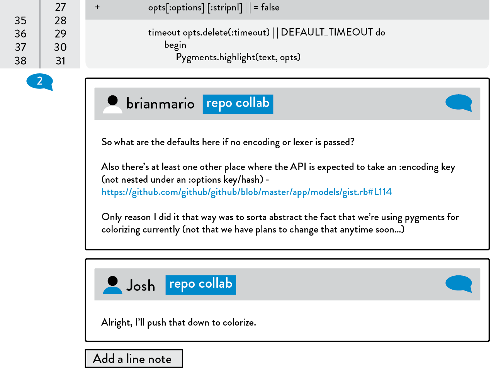
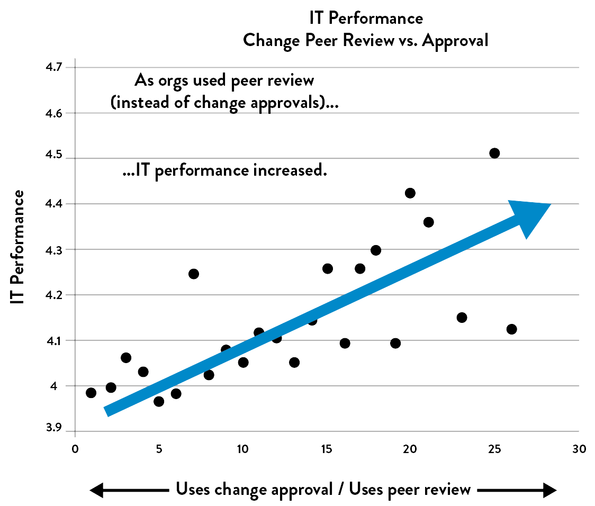
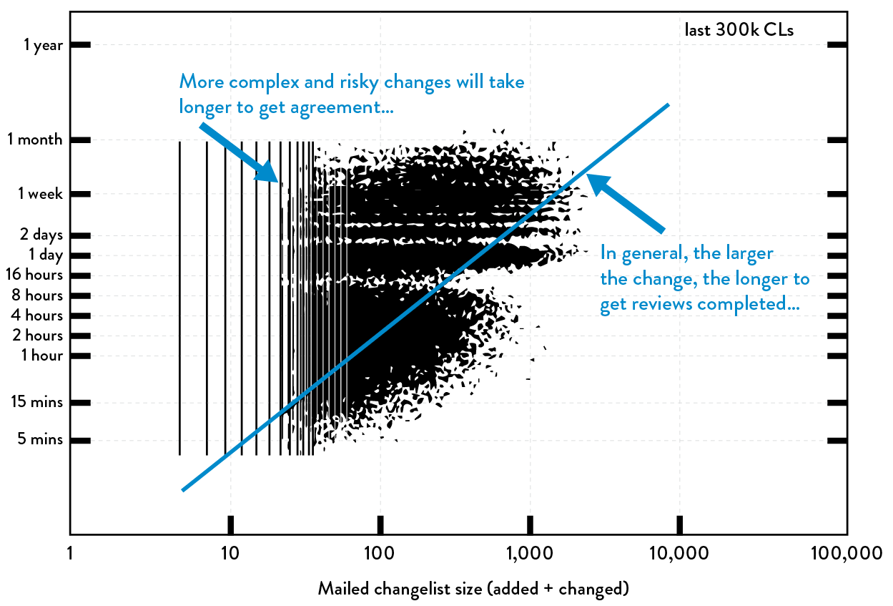

18Create Review and Coordination Processes to Increase Quality of Our Current Work
In the previous chapters, we created the telemetry necessary to see and solve problems in production and at all stages of our deployment pipeline, and created fast feedback loops from customers to help enhance organizational learning—learning that encourages ownership and responsibility for customer satisfaction and feature performance, which helps us succeed.
Our goal in this chapter is to enable Development and Operations to reduce the risk of production changes before they are made. Traditionally, when we review changes for deployment, we tend to rely heavily on reviews, inspections, and approvals just prior to deployment. Frequently those approvals are given by external teams who are often too far removed from the work to make informed decisions on whether a change is risky or not, and the time required to get all the necessary approvals also lengthens our change lead times.
The peer review process at GitHub is a striking example of how inspection can increase quality, make deployments safe, and be integrated into the flow of everyone’s daily work. They pioneered the process called pull request, one of the most popular forms of peer review that span Dev and Ops.
Scott Chacon, CIO and co-founder of GitHub, wrote on his website that pull requests are the mechanism that lets engineers tell others about changes they have pushed to a repository on GitHub. Once a pull request is sent, interested parties can review the set of changes, discuss potential modifications, and even push follow-up commits if necessary. Engineers submitting a pull request will often request a “+1,” “+2,” or so forth, depending on how many reviews they need, or “@mention” engineers that they’d like to get reviews from.
At GitHub, pull requests are also the mechanism used to deploy code into production through a collective set of practices they call “GitHub Flow”—it’s how engineers request code reviews, gather and integrate feedback, and announce that code will be deployed to production (i.e., “master” branch).
 Figure 40: Comments and suggestions on a GitHub pull request
(Source: Scott Chacon, “GitHub Flow,” ScottChacon.com, August 31, 2011, http://scottchacon.com/2011/08/31/github-flow.html.)
GitHub Flow is composed of five steps:
- To work on something new, the engineer creates a descriptively named branch off of master (e.g., “new-oauth2-scopes”).
- The engineer commits to that branch locally, regularly pushing their work to the same named branch on the server.
- When they need feedback or help, or when they think the branch is ready for merging, they open a pull request.
- When they get their desired reviews and get any necessary approvals of the feature, the engineer can then merge it into master.
- Once the code changes are merged and pushed to master, the engineer deploys them into production.
These practices, which integrate review and coordination into daliy work, have allowed GitHub to quickly and reliably deliver features to market with high quality and security. For example, in 2012 they performed an amazing 12,602 deployments. In particular, on August 23rd, after a company-wide summit where many exciting ideas were brainstormed and discussed, the company had their busiest deployment day of the year, with 563 builds and 175 successful deployments into production, all made possible through the pull request process.
Throughout this chapter we will integrate practices, such as those used at GitHub, to shift our reliance away from periodic inspections and approvals, and moving to integrated peer review performed continually as a part of our daily work. Our goal is to ensure that Development, Operations, and Infosec are continuously collaborating so that changes we make to our systems will operate reliably, securely, safely, and as designed.
THE DANGERS OF CHANGE APPROVAL PROCESSES
The Knight Capital failure is one of the most prominent software deployment errors in recent memory. A fifteen minute deployment error resulted in a $440 million trading loss, during which the engineering teams were unable to disable the production services. The financial losses jeopardized the firm’s operations and forced the company to be sold over the weekend so they could continue operating without jeopardizing the entire financial system.
John Allspaw observed that when high-profile incidents occur, such as the Knight Capital deployment accident, there are typically two counterfactual narratives for why the accident occurred.†
The first narrative is that the accident was due to a change control failure, which seems valid because we can imagine a situation where better change control practices could have detected the risk earlier and prevented the change from going into production. And if we couldn’t prevent it, we might have taken steps to enable faster detection and recovery.
The second narrative is that the accident was due to a testing failure. This also seems valid, with better testing practices we could have identified the risk earlier and canceled the risky deployment, or we could have at least taken steps to enable faster detection and recovery.
The surprising reality is that in environments with low-trust, command-and-control cultures, the outcomes of these types of change control and testing countermeasures often result in an increased likelihood that problems will occur again, potentially with even worse outcomes.
Gene Kim (co-author of this book) describes his realization that change and testing controls can potentially have the opposite effect than intended as “one of the most important moments of my professional career. This ‘aha’ moment was the result of a conversation in 2013 with John Allspaw and Jez Humble about the Knight Capital accident, making me question some of my core beliefs that I’ve formed over the last ten years, especially having been trained as an auditor.”
He continues, “However upsetting it was, it was also a very formative moment for me. Not only did they convince me that they were correct, we tested these beliefs in the 2014 State of DevOps Report, which led to some astonishing findings that reinforce that building high-trust cultures is likely the largest management challenge of this decade.”
POTENTIAL DANGERS OF “OVERLY CONTROLLING CHANGES”
Traditional change controls can lead to unintended outcomes, such as contributing to long lead times, and reducing the strength and immediacy of feedback from the deployment process. In order to understand how this happens, let us examine the controls we often put in place when change control failures occur:
- Adding more questions that need to be answered to the change request form
- Requiring more authorizations, such as one more level of management approval (e.g., instead of merely the VP of Operations approving, we now require that the CIO also approve) or more stakeholders (e.g., network engineering, architecture review boards, etc.)
- Requiring more lead time for change approvals so that change requests can be properly evaluated
These controls often add more friction to the deployment process by multiplying the number of steps and approvals, and increasing batch sizes and deployment lead times, which we know reduces the likelihood of successful production outcomes for both Dev and Ops. These controls also reduce how quickly we get feedback from our work.
One of the core beliefs in the Toyota Production System is that “people closest to a problem typically know the most about it.” This becomes more pronounced as the work being performed and the system the work occurs in become more complex and dynamic, as is typical in DevOps value streams. In these cases, creating approval steps from people who are located further and further away from the work may actually reduce the likelihood of success. As has been proven time and again, the further the distance between the person doing the work (i.e., the change implementer) and the person deciding to do the work (i.e., the change authorizer), the worse the outcome.
In Puppet Labs’ 2014 State of DevOps Report, one of the key findings was that high-performing organizations relied more on peer review and less on external approval of changes. Figure 41 shows that the more organizations rely on change approvals, the worse their IT performance in terms of both stability (mean time to restore service and change fail rate) and throughput (deployment lead times, deployment frequency).
In many organizations, change advisory boards serve an important role in coordinating and governing the delivery process, but their job should not be to manually evaluate every change, nor does ITIL mandate such a practice.
To understand why this is the case, consider the predicament of being on a change advisory board, reviewing a complex change composed of hundreds of thousands of lines of code changes, and created by hundreds of engineers.
At one extreme, we cannot reliably predict whether a change will be successful either by reading a hundred-word description of the change or by merely validating that a checklist has been completed. At the other extreme, painfully scrutinizing thousands of lines of code changes is unlikely to reveal any new insights. Part of this is the nature of making changes inside of a complex system. Even the engineers who work inside the codebase as part of their daily work are often surprised by the side effects of what should be low-risk changes.
 Figure 41: Organizations that rely on peer review outperform those with change approvals (Source: Puppet Labs, DevOps Survey Of Practice 2014)
For all these reasons, we need to create effective control practices that more closely resemble peer review, reducing our reliance on external bodies to authorize our changes. We also need to coordinate and schedule changes effectively. We explore both of these in the next two sections.
ENABLE COORDINATION AND SCHEDULING OF CHANGES
Whenever we have multiple groups working on systems that share dependencies, our changes will likely need to be coordinated to ensure that they don’t interfere with each other (e.g., marshaling, batching, and sequencing the changes). In general, the more loosely-coupled our architecture, the less we need to communicate and coordinate with other component teams—when the architecture is truly service-oriented, teams can make changes with a high degree of autonomy, where local changes are unlikely to create global disruptions.
However, even in a loosely-coupled architecture, when many teams are doing hundreds of independent deployments per day, there may be a risk of changes interfering with each other (e.g., simultaneous A/B tests). To mitigate these risks, we may use chat rooms to announce changes and proactively find collisions that may exist.
For more complex organizations and organizations with more tightly-coupled architectures, we may need to deliberately schedule our changes, where representatives from the teams get together, not to authorize changes, but to schedule and sequence their changes in order to minimize accidents.
However, certain areas, such as global infrastructure changes (e.g., core network switch changes) will always have a higher risk associated with them. These changes will always require technical countermeasures, such as redundancy, failover, comprehensive testing, and (ideally) simulation.
ENABLE PEER REVIEW OF CHANGES
Instead of requiring approval from an external body prior to deployment, we may require engineers to get peer reviews of their changes. In Development, this practice has been called code review, but it is equally applicable to any change we make to our applications or environments, including servers, networking, and databases.‡ The goal is to find errors by having fellow engineers close to the work scrutinize our changes. This review improves the quality of our changes, which also creates the benefits of cross-training, peer learning, and skill improvement.
A logical place to require reviews is prior to committing code to trunk in source control, where changes could potentially have a team-wide or global impact. At a minimum, fellow engineers should review our change, but for higher risk areas, such as database changes or business-critical components with poor automated test coverage, we may require further review from a subject matter expert (e.g., information security engineer, database engineer) or multiple reviews (e.g., “+2” instead of merely “+1”).
The principle of small batch sizes also applies to code reviews. The larger the size of the change that needs to be reviewed, the longer it takes to understand and the larger the burden on the reviewing engineer. As Randy Shoup observed, “There is a non-linear relationship between the size of the change and the potential risk of integrating that change—when you go from a ten line code change to a one hundred line code, the risk of something going wrong is more than ten times higher, and so forth.” This is why it’s so essential for developers to work in small, incremental steps rather than on long-lived feature branches.
Furthermore, our ability to meaningfully critique code changes goes down as the change size goes up. As Giray Özil tweeted, “Ask a programmer to review ten lines of code, he’ll find ten issues. Ask him to do five hundred lines, and he’ll say it looks good.”
Guidelines for code reviews include:
- Everyone must have someone to review their changes (e.g., to the code, environment, etc.) before committing to trunk.
- Everyone should monitor the commit stream of their fellow team members so that potential conflicts can be identified and reviewed.
- Define which changes qualify as high risk and may require review from a designated subject matter expert (e.g., database changes, security-sensitive modules such as authentication, etc.).§
- If someone submits a change that is too large to reason about easily—in other words, you can’t understand its impact after reading through it a couple of times, or you need to ask the submitter for clarification—it should be split up into multiple, smaller changes that can be understood at a glance.
To ensure that we are not merely rubber stamping reviews, we may also want to inspect the code review statistics to determine the number of proposed changes approved versus not approved, and perhaps sample and inspect specific code reviews.
Code reviews come in various forms:
- Pair programming: programmers work in pairs (see section below)
- “Over-the-shoulder”: One developer looks over the author’s shoulder as the latter walks through the code.
- Email pass-around: A source code management system emails code to reviewers automatically after the code is checked in.
- Tool-assisted code review: Authors and reviewers use specialized tools designed for peer code review (e.g., Gerrit, GitHub pull requests, etc.) or facilities provided by the source code repositories (e.g., GitHub, Mercurial, Subversion, as well as other platforms such as Gerrit, Atlassian Stash, and Atlassian Crucible).
Close scrutiny of changes in many forms is effective in locating errors previously overlooked. Code reviews can facilitate increased code commits and production deployments, and support trunk-based deployment and continuous delivery at scale, as we will see in the following case study.
Case Study
Code Reviews at Google (2010)
Google is an excellent example of a company that employees trunk-based development and continuous delivery at scale. As noted earlier in this book, Eran Messeri described that in 2013 the processes at Google enabled over thirteen thousand developers to work off of trunk on a single source code tree, performing over 5,500 code commits per week, resulting in hundreds of production deployments per week. In 2010, there were 20+ changes being checked in to trunk every minute, resulting in 50% of the codebase being changed every month.
This requires considerable discipline from Google team members and mandatory code reviews, which cover the following areas:
- Code readability for languages (enforces style guide)
- Ownership assignments for code sub-trees to maintain consistency and correctness
- Code transparency and code contributions across teams
Figure 42 shows how code review lead times are affected by the change size. On the x-axis is the size of the change, and on the y-axis is the lead time required for code review process. In general, the larger the change submitted for code reviews, the longer the lead time required to get the necessary sign offs. And the data points in the upper-left corner represent the more complex and potentially risky changes that required more deliberation and discussion.
 Figure 42: Size of change vs. lead time for reviews at Google (Source: Ashish Kumar, “Development at the Speed and Scale of Google,” presentation at QCon, San Francisco, CA, 2010, https://qconsf.com/sf2010/dl/qcon-sanfran-2010/slides/AshishKumar_DevelopingProductsattheSpeedandScaleofGoogle.pdf.)
While he was working as a Google engineering director, Randy Shoup started a personal project to solve a technical problem that the organization was facing. He said, “I worked on that project for weeks and finally got around to asking a subject matter expert to review my code. It was nearly three thousand lines of code, which took the reviewer days of work to go through. He told me, ‘Please don’t do that to me again.’ I was grateful that this engineer took the time to do that. That was also when I learned how to make code reviews a part of my daily work.”
POTENTIAL DANGERS OF DOING MORE MANUAL TESTING AND CHANGE FREEZES
Now that we have created peer reviews that reduce our risk, shorten lead times associated with change approval processes, and enable continuous delivery at scale, such as we saw in the Google case study, let us examine the effects of how testing countermeasure can sometimes backfire. When testing failures occur, our typical reaction is to do more testing. However, if we are merely performing more testing at the end of the project, we may worsen our outcomes.
This is especially true if we are doing manual testing, because manual testing is naturally slower and more tedious than automated testing and performing “additional testing” often has the consequence of taking significantly longer to test, which means we are deploying less frequently, thus increasing our deployment batch size. And we know from both theory and practice that when we increase our deployment batch size, our change success rates go down and our incident counts and MTTR go up—the opposite of the outcome we want.
Instead of performing testing on large batches of changes that are scheduled around change freeze periods, we want to fully integrate testing our daily work as part of the smooth and continual flow into production, and increase our deployment frequency. By doing this, we build in quality, which allows us to test, deploy, and release in ever smaller batch sizes.
ENABLE PAIR PROGRAMMING TO IMPROVE ALL OUR CHANGES
Pair programming is when two engineers work together at the same workstation, a method popularized by Extreme Programming and Agile in the early 2000s. As with code reviews, this practice started in Development but is equally applicable to the work that any engineer does in our value stream. In this book, we will use the term pairing and pair programming interchangeably, to indicate that the practice is not just for developers.
In one common pattern of pairing, one engineer fills the role of the driver, the person who actually writes the code, while the other engineer acts as the navigator, observer, or pointer, the person who reviews the work as it is being performed. While reviewing, the observer may also consider the strategic direction of the work, coming up with ideas for improvements and likely future problems to address. This frees the driver to focus all of his or her attention on the tactical aspects of completing the task, using the observer as a safety net and guide. When the two have differing specialties, skills are transferred as an automatic side effect, whether it’s through ad-hoc training or by sharing techniques and workarounds.
Another pair programming pattern reinforces test-driven development (TDD) by having one engineer write the automated test and the other engineer implement the code. Jeff Atwood, one of the founders of Stack Exchange, wrote, “I can’t help wondering if pair programming is nothing more than code review on steroids….The advantage of pair programming is its gripping immediacy: it is impossible to ignore the reviewer when he or she is sitting right next to you.”
He continued, “Most people will passively opt out [of reviewing code] if given the choice. With pair programming, that’s not possible. Each half of the pair has to understand the code, right then and there, as it’s being written. Pairing may be invasive, but it can also force a level of communication that you’d otherwise never achieve.”
Dr. Laurie Williams performed a study in 2001 that showed “paired programmers are 15% slower than two independent individual programmers, while ‘error-free’ code increased from 70% to 85%. Since testing and debugging are often many times more costly than initial programming, this is an impressive result. Pairs typically consider more design alternatives than programmers working alone and arrive at simpler, more maintainable designs; they also catch design defects early.” Dr. Williams also reported that 96% of her respondents stated that they enjoyed their work more when they programmed in pairs than when they programmed alone.¶
Pair programming has the additional benefit of spreading knowledge throughout the organization and increasing information flow within the team. Having more experienced engineers review while the less experienced engineer codes is also an effective way to teach and be taught.
Case Study
Pair Programming Replacing Broken Code Review Processes at Pivotal Labs (2011)
Elisabeth Hendrickson, VP of Engineering at Pivotal Software, Inc. and author of Explore It!: Reduce Risk and Increase Confidence with Exploratory Testing, has spoken extensively about making every team responsible for their own quality, as opposed to making separate departments responsible. She argues that doing so not only increase quality, but significantly increases the flow of work into production.
In her 2015 DevOps Enterprise Summit presentation, she described how in 2011, there were two accepted methods of code review at Pivotal: pair programming (which ensured that every line of code was inspected by two people) or a code review process that was managed by Gerrit (which ensured that every code commit had two designated people “+1” the change before it was allowed into trunk).
The problem Hendrickson observed with the Gerrit code review process was that it would often take an entire week for developers to receive their required reviews. Worse, skilled developers were experiencing the “frustrating and soul crushing experience of not being able to get simple changes into the codebase, because we had inadvertently created intolerable bottlenecks.”
Hendrickson lamented that “the only people who had the ability to ‘+1’ the changes were senior engineers, who had many other responsibilities and often didn’t care as much about the fixes the more junior developers were working on or their productivity. It created a terrible situation—while you were waiting for your changes to get reviewed, other developers were checking in their changes. So for a week, you would have to merge all their code changes onto your laptop, re-run all the tests to ensure that everything still worked, and (sometimes) you’d have to resubmit your changes for review again!”
To fix the problem and eliminate all of these delays, they ended up dismantling the entire Gerrit code review process, instead requiring pair programming to implement code changes into the system. By doing this, they reduced the amount of time required to get code reviewed from weeks to hours.
Hendrickson is quick to note that code reviews work fine in many organizations, but it requires a culture that values reviewing code as highly as it values writing the code in the first place. When that culture is not yet in place, pair programming can serve as a valuable interim practice.
EVALUATING THE EFFECTIVENESS OF PULL REQUEST PROCESSES
Because the peer review process is an important part of our control environment, we need to be able to determine whether it is working effectively or not. One method is to look at production outages and examine the peer review process for any relevant changes.
Another method comes from Ryan Tomayko, CIO and co-founder of GitHub and one of the inventors of the pull request process. When asked to describe the difference between a bad pull request and a good pull request, he said it has little to do with the production outcome. Instead, a bad pull request is one that doesn’t have enough context for the reader, having little or no documentation of what the change is intended to do. For example, a pull request that merely has the following text: “Fixing issue #3616 and #3841.”**
That was an actual internal GitHub pull request, which Tomayko critiqued, “This was probably written by a new engineer here. First off, no specific engineers were specifically @mentioned—at a minimum, the engineer should have mentioned their mentor or a subject matter expert in the area that they’re modifying to ensure that someone appropriate reviews their change. Worse, there isn’t any explanation of what the changes actually are, why it’s important, or exposing any of the implementer’s thinking.”
On the other hand, when asked to describe a great pull request that indicates an effective review process, Tomayko quickly listed off the essential elements: there must be sufficient detail on why the change is being made, how the change was made, as well as any identified risks and resulting countermeasures.
Tomayko also looks for good discussion of the change, enabled by all the context that the pull request provided—often, there will be additional risks pointed out, ideas on better ways to implement the desired change, ideas on how to better mitigate the risk, and so forth. And if something bad or unexpected happens upon deployment, it is added to the pull request, with a link to the corresponding issue. All discussion happens without placing blame; instead, there is a candid conversation on how to prevent the problem from recurring in the future.
As an example, Tomayko produced another internal GitHub pull request for a database migration. It was many pages long, with lengthy discussions about the potential risks, leading up to the following statement by the pull request author: “I am pushing this now. Builds are now failing for the branch, because of a missing column in the CI servers. (Link to Post-Mortem: MySQL outage)”
The change submitter then apologized for the outage, describing what conditions and mistaken assumptions led to the accident, as well as a list of proposed countermeasures to prevent it from happening again. This was followed by pages and pages of discussion. Reading through the pull request, Tomayko smiled, “Now that is a great pull request.”
As described above, we can evaluate the effectiveness of our peer review process by sampling and examining pull requests, either from the entire population of pull requests or those that are relevant to production incidents.
FEARLESSLY CUT BUREAUCRATIC PROCESSES
So far, we have discussed peer review and pair programming processes that enable us to increase the quality of our work without relying on external approvals for changes. However, many companies still have long-standing processes for approval that require months to navigate. These approval processes can significantly increase lead times, not only preventing us from delivering value quickly to customers, but potentially increasing the risk to our organizational objectives. When this happens, we must re-engineer our processes so that we can achieve our goals more quickly and safely.
As Adrian Cockcroft observed, “A great metric to publish widely is how many meetings and work tickets are mandatory to perform a release—the goal is to relentlessly reduce the effort required for engineers to perform work and deliver it to the customer.”
Similarly, Dr. Tapabrata Pal, technical fellow at Capital One, described a program at Capital One called Got Goo?, which involves a dedicated team removing obstacles—including tools, processes, and approvals—that impede work completion. Jason Cox, Senior Director of Systems Engineering at Disney, described in his presentation at the DevOps Enterprise Summit in 2015 a program called Join The Rebellion that aimed to remove toil and obstacles from daily work.
At Target in 2012, a combination of the Technology Enterprise Adoption Process and Lead Architecture Review Board (TEAP-LARB process) resulted in complicated, long approval times for anyone attempting to bring in new technology. The TEAP form needed to be filled out by anyone wanting to propose new technologies to be adopted, such as a new database or monitoring technologies. These proposals were evaluated, and those deemed appropriate were put onto the monthly LARB meeting agenda.
Heather Mickman and Ross Clanton, Director of Development and Director of Operations at Target, Inc., respectively, were helping to lead the DevOps movement at Target. During their DevOps initiative, Mickman had identified a technology needed to enable an initiative from the lines of business (in this case, Tomcat and Cassandra). The decision from the LARB was that Operations could not support it at the time. However, because Mickman was so convinced that this technology was essential, she proposed that her Development team be responsible for service support as well as integration, availability, and security, instead of relying on the Operations team.
“As we went through the process, I wanted to better understand why the TEAP-LARB process took so long to get through, and I used the technique of ‘the five why’s’....Which eventually led to the question of why TEAP-LARB existed in the first place. The surprising thing was that no one knew, outside of a vague notion that we needed some sort of governance process. Many knew that there had been some sort of disaster that could never happen again years ago, but no one could remember exactly what that disaster was, either,” Mickman observed.
Mickman concluded that this process was not necessary for her group if they were responsible for the operational responsibilities of the technology she was introducing. She added, “I let everyone know that any future technologies that we would support wouldn’t have to go through the TEAP-LARB process, either.”
The outcome was that Cassandra was successfully introduced inside Target and eventually widely adopted. Furthermore, the TEAP-LARB process was eventually dismantled. Out of appreciation, her team awarded Mickman the Lifetime Achievement Award for removing barriers to get technology work done within Target.
CONCLUSION
In this chapter, we discussed how to integrate practices into our daily work that increase the quality of our changes and reduce the risk of poor deployment outcomes, reducing our reliance on approval processes. Case studies from GitHub and Target show that these practices not only improve our outcomes, but also significantly reduce lead times and increase developer productivity. To do this kind of work requires a high-trust culture.
Consider a story that John Allspaw told about a newly hired junior engineer: The engineer asked if it was okay to deploy a small HTML change, and Allspaw responded, “I don’t know, is it?” He then asked “Did you have someone review your change? Do you know who the best person to ask is for changes of this type? Did you do everything you absolutely could to assure yourself that this change operates in production as designed? If you did, then don’t ask me—just make the change!”
By responding this way, Allspaw reminded the engineer that she was solely responsibility for the quality of her change—if she did everything she felt she could to give herself confidence that the change would work, then she didn’t need to ask anyone for approval, she should make the change.
Creating the conditions that enable change implementers to fully own the quality of their changes is an essential part of the high-trust, generative culture we are striving to build. Furthermore, these conditions enable us to create an ever-safer system of work, where we are all helping each other achieve our goals, spanning whatever boundaries necessary to get there.
PART IV CONCLUSION
Part IV has shown us that by implementing feedback loops we can enable everyone to work together toward shared goals, see problems as they occur, and, with quick detection and recovery, ensure that features not only operate as designed in production, but also achieve organizational goals and organizational learning. We have also examined how to enable shared goals spanning Dev and Ops so that they can improve the health of the entire value stream.
We are now ready to enter Part V: The Third Way, The Technical Practices of Learning, so we can create opportunities for learning that happen earlier and ever more quickly and cheaply, and so that we can unleash a culture of innovation and experimentation that enables everyone to do meaningful work that helps our organization succeed.

Table of contents
- Preface
- Foreword
- Imagine a World Where Dev and Ops Become DevOps
-
Part I The Three Ways
- A BRIEF HISTORY
- 1 Agile, Continuous Delivery, and the Three Ways
- 2 The First Way: The Principles of Flow
- 3 The Second Way: The Principles of Feedback
- 4 The Third Way: The Principles of Continual Learning and Experimentation
-
Part II Where to Start
- Introduction
- 5 Selecting Which Value Stream to Start With
- 6 Understanding the Work in Our Value Stream, Making it Visible, and Expanding it Across the Organization
-
7 How to Design Our Organization and Architecture with Conway’s Law in Mind
- ORGANIZATIONAL ARCHETYPES
- PROBLEMS OFTEN CAUSED BY OVERLY FUNCTIONAL ORIENTATION (“OPTIMIZING FOR COST”)
- ENABLE MARKET-ORIENTED TEAMS (“OPTIMIZING FOR SPEED”)
- MAKING FUNCTIONAL ORIENTATION WORK
- TESTING, OPERATIONS, AND SECURITY AS EVERYONE’S JOB, EVERY DAY
- ENABLE EVERY TEAM MEMBER TO BE A GENERALIST
- FUND NOT PROJECTS, BUT SERVICES AND PRODUCTS
- DESIGN TEAM BOUNDARIES IN ACCORDANCE WITH CONWAY’S LAW
- CREATE LOOSELY-COUPLED ARCHITECTURES TO ENABLE DEVELOPER PRODUCTIVITY AND SAFETY
- CONCLUSION
- 8 How to Get Great Outcomes by Integrating Operations into the Daily Work of Development
-
PART III—THE FIRST WAY: THE TECHNICAL PRACTICES OF FLOW
- 9 Create the Foundations of Our Deployment Pipeline
-
10 Enable Fast and Reliable Automated Testing
- CONTINUOUSLY BUILD, TEST, AND INTEGRATE OUR CODE AND ENVIRONMENTS
-
BUILD A FAST AND RELIABLE AUTOMATED VALIDATION TEST SUITE
- CATCH ERRORS AS EARLY IN OUR AUTOMATED TESTING AS POSSIBLE
- ENSURE TESTS RUN QUICKLY (IN PARALLEL, IF NECESSARY)
- WRITE OUR AUTOMATED TESTS BEFORE WE WRITE THE CODE (“TEST-DRIVEN DEVELOPMENT”)
- AUTOMATE AS MANY OF OUR MANUAL TESTS AS POSSIBLE
- INTEGRATE PERFORMANCE TESTING INTO OUR TEST SUITE
- INTEGRATE NON-FUNCTIONAL REQUIREMENTS TESTING INTO OUR TEST SUITE
- PULL OUR ANDON CORD WHEN THE DEPLOYMENT PIPELINE BREAKS
- CONCLUSION
- 11 Enable and Practice Continuous Integration
- 12 Automate and Enable Low-Risk Releases
- 13 Architect for Low-Risk Releases
-
PART IV—THE SECOND WAY: THE TECHNICAL PRACTICES OF FEEDBACK
- Introduction
-
14 Create Telemetry to Enable Seeing and Solving Problems
- CREATE OUR CENTRALIZED TELEMETRY INFRASTRUCTURE
- CREATE APPLICATION LOGGING TELEMETRY THAT HELPS PRODUCTION
- USE TELEMETRY TO GUIDE PROBLEM SOLVING
- ENABLE CREATION OF PRODUCTION METRICS AS PART OF DAILY WORK
- CREATE SELF-SERVICE ACCESS TO TELEMETRY AND INFORMATION RADIATORS
- FIND AND FILL ANY TELEMETRY GAPS
- CONCLUSION
- 15 Analyze Telemetry to Better Anticipate Problems and Achieve Goals
- 16 Enable Feedback So Development and Operations Can Safely Deploy Code
- 17 Integrate Hypothesis-Driven Development and A/B Testing into Our Daily Work
-
18 Create Review and Coordination Processes to Increase Quality of Our Current Work
- THE DANGERS OF CHANGE APPROVAL PROCESSES
- POTENTIAL DANGERS OF “OVERLY CONTROLLING CHANGES”
- ENABLE COORDINATION AND SCHEDULING OF CHANGES
- ENABLE PEER REVIEW OF CHANGES
- POTENTIAL DANGERS OF DOING MORE MANUAL TESTING AND CHANGE FREEZES
- ENABLE PAIR PROGRAMMING TO IMPROVE ALL OUR CHANGES
- FEARLESSLY CUT BUREAUCRATIC PROCESSES
- CONCLUSION
- PART IV CONCLUSION
-
PART V—THE THIRD WAY: THE TECHNICAL PRACTICES OF CONTINUAL LEARNING AND EXPERIMENTATION
- Introduction
-
19 Enable and Inject Learning into Daily Work
- ESTABLISH A JUST, LEARNING CULTURE
- SCHEDULE BLAMELESS POST-MORTEM MEETINGS AFTER ACCIDENTS OCCUR
- PUBLISH OUR POST-MORTEMS AS WIDELY AS POSSIBLE
- DECREASE INCIDENT TOLERANCES TO FIND EVER-WEAKER FAILURE SIGNALS
- REDEFINE FAILURE AND ENCOURAGE CALCULATED RISK-TAKING
- INJECT PRODUCTION FAILURES TO ENABLE RESILIENCE AND LEARNING
- INSTITUTE GAME DAYS TO REHEARSE FAILURES
- CONCLUSION
-
20 Convert Local Discoveries into Global Improvements
- USE CHAT ROOMS AND CHAT BOTS TO AUTOMATE AND CAPTURE ORGANIZATIONAL KNOWLEDGE
- AUTOMATE STANDARDIZED PROCESSES IN SOFTWARE FOR RE-USE
- CREATE A SINGLE, SHARED SOURCE CODE REPOSITORY FOR OUR ENTIRE ORGANIZATION
- SPREAD KNOWLEDGE BY USING AUTOMATED TESTS AS DOCUMENTATION AND COMMUNITIES OF PRACTICE
- DESIGN FOR OPERATIONS THROUGH CODIFIED NON-FUNCTIONAL REQUIREMENTS
- BUILD REUSABLE OPERATIONS USER STORIES INTO DEVELOPMENT
- ENSURE TECHNOLOGY CHOICES HELP ACHIEVE ORGANIZATIONAL GOALS
- CONCLUSION
- 21 Reserve Time to Create Organizational Learning and Improvement
-
22 Information Security as Everyone’s Job, Every Day
- INTEGRATE SECURITY INTO DEVELOPMENT ITERATION DEMONSTRATIONS
- INTEGRATE SECURITY INTO DEFECT TRACKING AND POST-MORTEMS
- INTEGRATE PREVENTIVE SECURITY CONTROLS INTO SHARED SOURCE CODE REPOSITORIES AND SHARED SERVICES
- INTEGRATE SECURITY INTO OUR DEPLOYMENT PIPELINE
- ENSURE SECURITY OF THE APPLICATION
- ENSURE SECURITY OF OUR SOFTWARE SUPPLY CHAIN
- ENSURE SECURITY OF THE ENVIRONMENT
- INTEGRATE INFORMATION SECURITY INTO PRODUCTION TELEMETRY
- CREATING SECURITY TELEMETRY IN OUR APPLICATIONS
- CREATING SECURITY TELEMETRY IN OUR ENVIRONMENT
- PROTECT OUR DEPLOYMENT PIPELINE
- CONCLUSION
-
23 Protecting the Deployment Pipeline
- INTEGRATE SECURITY AND COMPLIANCE INTO CHANGE APPROVAL PROCESSES
- RE-CATEGORIZE THE MAJORITY OF OUR LOWER RISK CHANGES AS STANDARD CHANGES
- WHAT TO DO WHEN CHANGES ARE CATEGORIZED AS NORMAL CHANGES
- REDUCE RELIANCE ON SEPARATION OF DUTY
- ENSURE DOCUMENTATION AND PROOF FOR AUDITORS AND COMPLIANCE OFFICERS
- CONCLUSION
- PART VI CONCLUSION
- A Call to Action
-
Appendices
- APPENDIX 1 THE CONVERGENCE OF DEVOPS
- APPENDIX 2 THEORY OF CONSTRAINTS AND CORE, CHRONIC CONFLICTS
- APPENDIX 3 TABULAR FORM OF DOWNWARD SPIRAL
- APPENDIX 4 THE DANGERS OF HANDOFFS AND QUEUES
- APPENDIX 5 MYTHS OF INDUSTRIAL SAFETY
- APPENDIX 6 THE TOYOTA ANDON CORD
- APPENDIX 7 COTS SOFTWARE
- APPENDIX 8 POST-MORTEM MEETINGS
- APPENDIX 9 THE SIMIAN ARMY
- APPENDIX 10 TRANSPARENT UPTIME
- Additional Resources
- Endnotes
- Index
- Acknowledgments
- Author Biographies